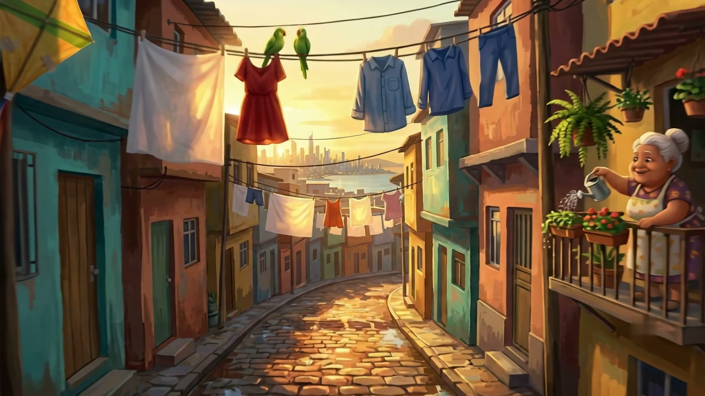
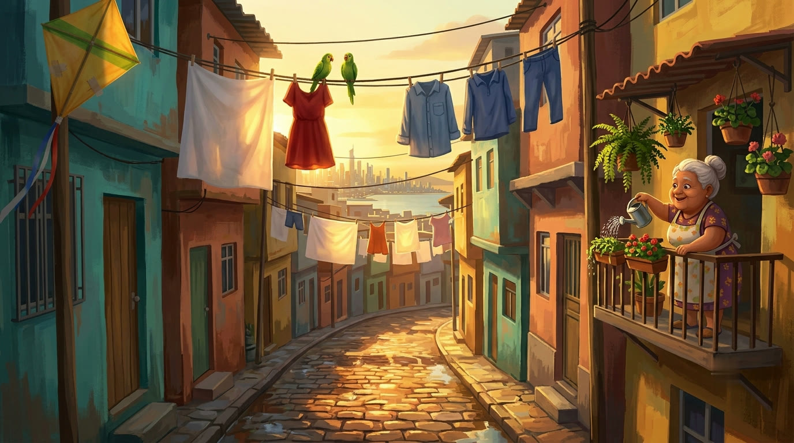
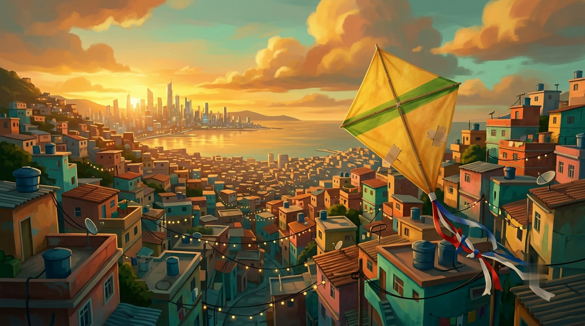
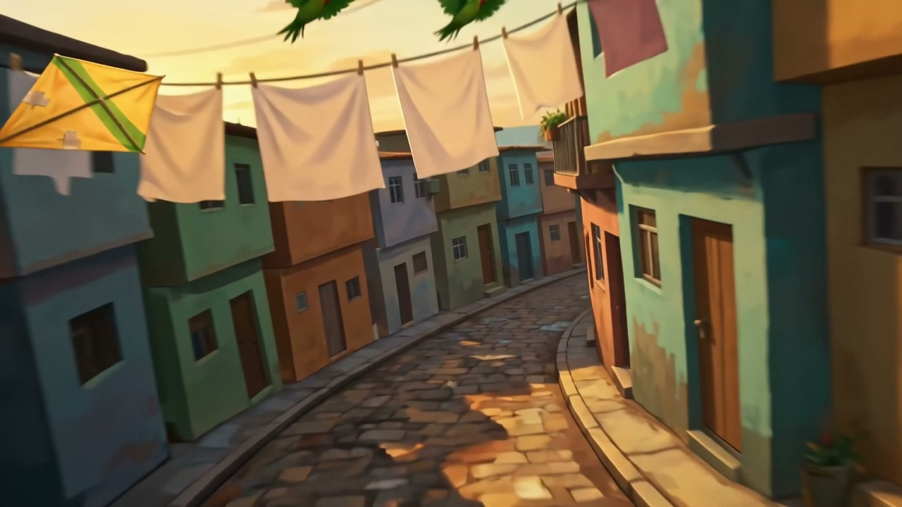
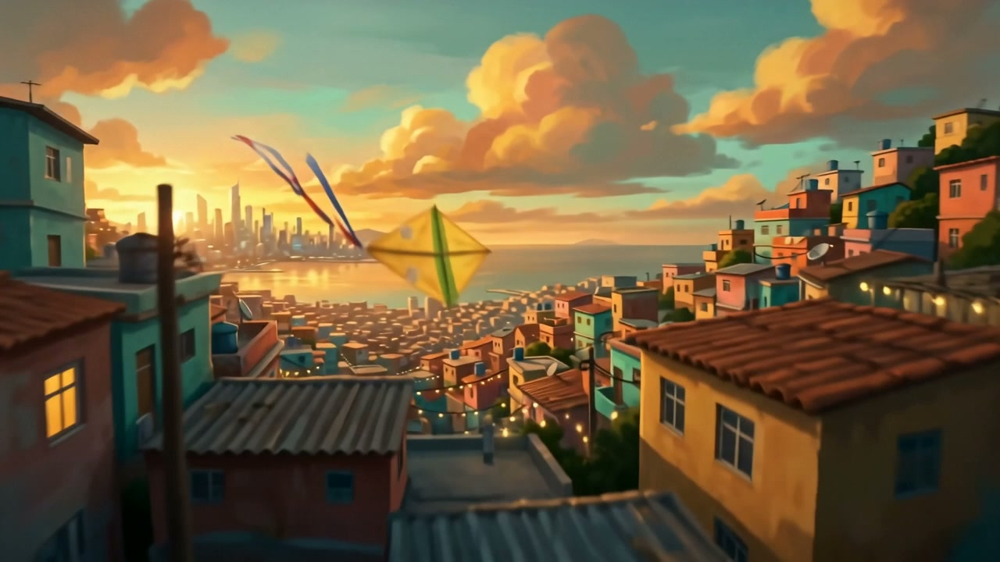

Case Study · Episode 11 · AI Animated Short
PIPA: a flight through a painting
Pipa is Portuguese for kite. Ten seconds of FPV flight through a hand-painted hillside favela at golden hour — under the laundry lines, past a laughing grandmother and a scatter of parakeets, then up over the rooftops as the string lights come on, racing a yellow paper kite the whole way. Two free image generations, one video generation, first take kept. Total spend: zero.
The finished shot · Seedance 2.0, one continuous take — start and end frames locked to
two paintings, everything between choreographed by the prompt.
Overview
Lock the destination, then fly
The whole method fits in one sentence: paint the first frame and the last frame as still images — where quality is free and retakes cost nothing — then hand the video model a route between two fixed points instead of an open-ended wish. The camera can't drift off-world when both ends of the shot are nailed down.
2Paintings → the anchors
1Video generation
$0Total generation spend
10sOne continuous take
The Pipeline
Step by step
01
The Two Paintings
Both stills were generated for free in Nano Banana — and order was the trick. The rooftop reveal came first, because it defines the world: the palette, the sun height, the bay, the skyline, the kite. Then the street-level frame was requested in the same chat, as "same world, same light" — so the model carried the style over instead of reinventing it.
The brief asked for a hand-painted animated-feature look: visible brushwork, saturated color, golden amber against teal shadows. The center of the street frame was kept deliberately empty — that's the flight path.
Nano Banana · free tier Reveal first, street second
Fig. 1 — the start frame: laundry lines staggered like slalom gates, a grandmother
mid-pour, two parakeets, and the kite already entering top-left.
02
The Clean Plates
Free generations arrive with a small sparkle watermark — and the end frame gets held on screen at the close
of the shot, so it had to go. A targeted FFmpeg delogo
patch (52×58 pixels, interpolated from surrounding brushwork) erased it from both plates; on painterly art
the repair is invisible at video resolution.
Small habit, big principle: never feed a pipeline a dirty plate. Whatever is in the reference frames is canon to the video model — including watermarks.
FFmpeg · delogo Zoom-verify at 3×
Fig. 2 — the end frame, cleaned: the painted hillside at dusk, string lights on,
the kite settled beside the camera. This exact image closes the film.
03
The Frame Lock
Both paintings were attached to Seedance 2.0 as hard anchors — one as the start frame, one as the end frame. That single decision is why the shot holds: the model isn't asked to imagine a destination, only to travel between two fixed points in the same painted world.
Look at the pairs — the film's first and last frames against the source paintings. The end frame is near-identical to the plate: the reveal lands exactly as art-directed, every time, because it was never left to chance.
Start + end frame · locked The drift-killerThe painting
The film · frame 1
The painting

The film · final frame
Fig. 3 — painting vs. film, both ends of the shot. The frame lock keeps the
destination honest.
04
The Flight
The prompt never says "cinematic" or "dynamic" — banned words. It choreographs physics on a timeline instead: thread under two laundry lines and over the third, the sheet ballooning in the propwash; bank with the curve of the street, slight propeller wobble; pitch up, rooftops wheeling past in parallax; then decelerate and settle to a complete static hover matching the end frame.
Two beats, not three. An earlier draft opened with a rooftop dive — cut, because at ten seconds every extra beat is drift risk. The weave gives speed, the rise gives awe. Nothing else earned its seconds.
Seedance 2.0 · one take Claude · choreographerPrompt (abridged)
FPV drone, one continuous take, camera never stops moving forward until the final settle. 0–5s: thread UNDER two laundry lines, OVER the third, sheet balloons in the propwash, bank with the street's curve, propeller wobble on the turn. 5–10s: pitch up hard, rooftops wheeling in parallax, string lights flicker ON in a wave, burst over the roofline — decelerate and SETTLE TO A STATIC HOVER matching the end frame. 24fps real-time THROUGHOUT, NO slow-motion. Hand-painted feature style, never photoreal.
Fig. 4 — physics on a timeline, not adjectives. Degrees, propwash, parallax and a
hard landing instruction.
The Footage
Ten seconds, three movements
Real frames from the single take. The kite enters the race in the weave, leads the climb, and is waiting beside the lens when the camera finally stills — a protagonist with no face to drift.

The weave

The burst
The settle
Mid-flight bonus — during the climb the kite overtakes the
camera and leads it over the rooftops. Unprompted, and better than what was scripted.
Behind the Scenes
What we learned (and what nearly broke)
The honest notes — the parts a tidy tutorial leaves out.
Don't say the studio's name
"Pixar-style" is an IP flag waiting to happen. The prompt
describes the look instead — hand-painted animated feature, visible brushwork, squash-and-stretch —
and gets the same warmth with zero eligibility risk. Describe qualities, not brands.
Cast an object, not a face
The kite is the film's protagonist — and paper doesn't suffer identity drift. Faces are the hardest thing to hold across a fast one-take; a prop with a strong silhouette gives the eye a character to follow at zero consistency cost.
The still stage is where taste lives
Iterating the paintings cost nothing and decided almost everything: palette, layout, the open flight corridor, the kite's design. By the time the (one) paid stage ran, there was nothing left to get wrong but the motion.
Still open
The generation came back without an audio track, so the reel edit adds the score — surdo and tamborim building to the rooftop burst, one cavaquinho chord on the settle. A Topaz 2× pass will bring the 720p master to reel resolution.
Toolbox
Everything used, and what it did
Nano Banana
The two anchor paintings
FREE TIERThe two anchor paintings
FFmpeg
Watermark removal — clean plates
OPEN SOURCEWatermark removal — clean plates
Seedance 2.0
The 10-second one-take flight
FREE CREDITSThe 10-second one-take flight
Claude Code
Choreography, cleanup & the case study
THE PRODUCERChoreography, cleanup & the case study